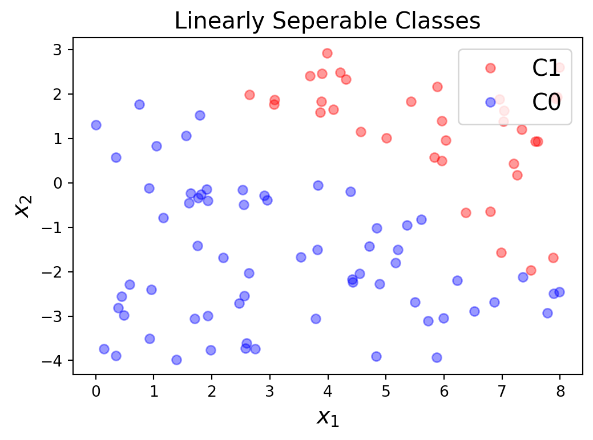
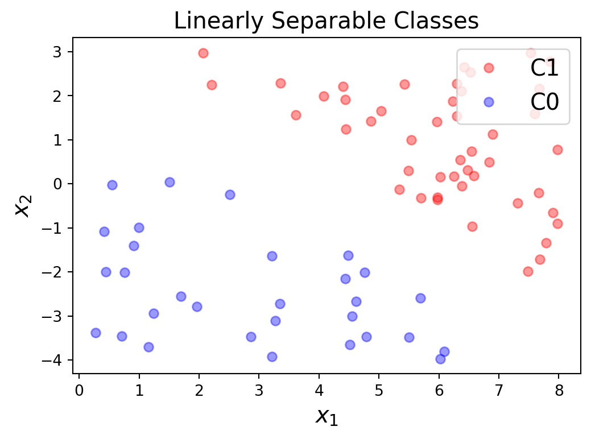
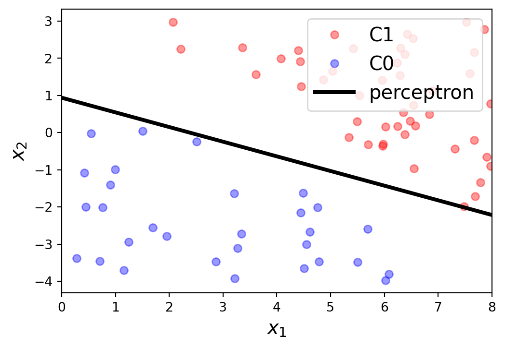

2 Lab: Classification with Perceptron
퍼셉트론을 활용하여 분류(Classification) 문제를 풀어보도록 하겠습니다. 이를 해결해 가는 과정에서 다양한 정보를 학습할 수 있기를 기대하기 때문입니다.
먼저, 분류는 Supervised Learning으로 미리 리벨(Label)이 붙어 있는 데이터를 분류하는 문제입니다. 우리가 사용하는 방법은 선형적인 방법과 비선형적인 방법 등등을 살펴보겠습니다.
Lab 작성시 참고자료
- 아래의 실습내용은 Kaist 이승철 교수님의 강의 자료를 참고하였습니다.
- 참고자료는 DEEP LEARNING에서 확인할 수 있습니다.
2.1 Classification
우리가 실습할 분류 문제는 선형 판별 분석(LDA, Linear Discriminant Analysis)입니다. 수치형 입력변수를 받아 범주형 타겟 변수를 예측하는 분류 방법으로 퍼셈트론을 활용하여 해결하기 좋은 문제 입니다.
위 산점도(Figure 2.1 )와 같은 산점도에서 C1과 C0을 구분하는 문제를 퍼셉트론을 이용하여 해결해 보겠습니다.
전장에서 살펴본 퍼셉트론(Figure 1.2)에 따라 설명하고자 합니다. 우선 입력받는 변수는 x, 가중치는 \omega로 둘수 있습니다.
\begin{align} x = \begin{bmatrix}x_1\\ \vdots\\ x_d \end{bmatrix} \qquad \omega = \begin{bmatrix}\omega_1\\ \vdots\\ \omega_d \end{bmatrix} \end{align} \tag{2.1}
여기서 Weighted Sum의 결과가 특정 임계치(\theta)를 초과하는 지에 따라 클래스1(C_1) 또는 클래스0(C_0)으로 구분하고자 합니다.
\begin{align} C_1 \quad if\, \sum_{i=1}^{d}\omega_{i}x_{i} > \theta \\ C_0 \quad if\, \sum_{i=1}^{d}\omega_{i}x_{i} < \theta \end{align} \tag{2.2}
이를 다시 Step function을 활용하여 Figure 1.2 의 노란색 박스(h(x))에 해당하는 노드를 다음의 식으로 변형하여 표현할 수 있습니다.
여기서 임계치(\theta)는 편향에 해당하는 값으로 변형하고 이를 다시 입력변수 \omega_0으로 간단하게 표현할 수 있습니다.
\begin{align} h(x) &= \text{sign} \left(\left( \sum\limits_{i=1}^{d}\omega_ix_i \right)- \theta \right) \\ &= \text{sign}\left(\left( \sum\limits_{i=1}^{d}\omega_ix_i \right)+ \omega_0\right) \end{align} \tag{2.3}
\omega_0=1로 두고 이를 벡터 형식(vector form)으로 표현하고, Step function을 Sign function으로 정의하면 아래와 같이 식을 수정할 수 있습니다.
\begin{align} h(x) &= \text{sign}(\sum_{i=0}^{d}\omega_{i}x_{i}) =\text{sign}(\omega^{T}x) \\ \text{sign}(x) &= \begin{cases} 1, &\text{if }\; x > 0\\ 0, &\text{if }\; x = 0\\ -1, &\text{if }\; x < 0 \end{cases} \end{align} \tag{2.4}
Perceptron Learning Algorithm(PLA)
위의 식을 실제 퍼셉트론에 적용하기 위하여 위 산점도(Figure 2.1 )의 개별 값들을 활용하여 \text{sign}(\omega^Tx_n) = \hat{y}_n을 산출하여 실제 라벨(y_n)과 비교하며 두 라벨값이 다를 경우 \omega를 업데이트 하도록 합니다.
\begin{align} \omega \leftarrow \begin{cases} \omega+y_nx_n & \hat{y_n} \neq y_n \\ \omega &\hat{y_n} = y_n \\ \end{cases} \end{align} \tag{2.5}
위의 절차를 Training Set을 이용하여 Iterative하게 반복하여 \omega를 업데이트 하도록 하여 PLA를 수행합니다.
Perceptron Loss Function
PLA를 수행하는 과정에서 학습을 종결시키기 위하여 Loss function이 필요합니다. 산출값 \hat{y}_n과 y_n을 비교하여 Loss들의 합(\mathscr{L}(\omega))이 0이 되도록 하는 조건으로 설정할 수 있습니다.
\begin{align} \mathscr{L}(\omega) = \sum_{n =1}^{m} \max \left\{ 0, -y_n \cdot \left(\omega^T x_n \right)\right\} \end{align} \tag{2.6}
2.2 Solving with perceptron algorithm
위에서 살펴본 내용을 이제 코드로 작성해 보겠습니다. 기본적인 입력변수 x를 x1과 x2로 라벨값 y를 C1과 C0로 생성하였습니다. 그에 따른 산점도 데이터는 아래와 같습니다.
#training data gerneration
m = 100
x1 = 8*np.random.rand(m, 1)
x2 = 7*np.random.rand(m, 1) - 4
g = 0.8*x1 + x2 -3
C1 = np.where(g >= 1)[0]
C0 = np.where(g < -1)[0]
각각의 입력값을 numpy로 연산할 수 있도록 Vectorize를 진행합니다.
\begin{align} x &= \begin{bmatrix} \left(x^{(1)}\right)^T \\ \left(x^{(2)}\right)^T \\ \left(x^{(3)}\right)^T\\ \vdots \\ \left(x^{(m)}\right)^T \end{bmatrix} = \begin{bmatrix} 1 & x_1^{(1)} & x_2^{(1)} \\ 1 & x_1^{(2)} & x_2^{(2)} \\ 1 & x_1^{(3)} & x_2^{(3)}\\\vdots & \vdots & \vdots \\ 1 & x_1^{(m)} & x_2^{(m)}\end{bmatrix} \\ y &= \begin{bmatrix}y^{(1)} \\ y^{(2)} \\ y^{(3)}\\ \vdots \\ y^{(m)} \end{bmatrix} \end{align}
X1 = np.hstack([np.ones([C1.shape[0],1]), x1[C1], x2[C1]])
X0 = np.hstack([np.ones([C0.shape[0],1]), x1[C0], x2[C0]])
X = np.vstack([X1, X0])
y = np.vstack([np.ones([C1.shape[0],1]), -np.ones([C0.shape[0],1])])
X = np.asmatrix(X)
y = np.asmatrix(y)가중치 \omega를 1로 초깃값을 설정하고, 각각의 입력값을 이용하여 PLA를 실행하며 가중치 업데이트(\omega \leftarrow \omega + yx)를 실행합니다.
w = np.ones([3,1])
w = np.asmatrix(w)
n_iter = y.shape[0]
flag = 0
while flag == 0:
flag = 1
for i in range(n_iter):
if y[i,0] != np.sign(X[i,:]*w)[0,0]:
w += y[i,0]*X[i,:].T
flag = 0위의 절차를 실행하여 산출한 결정 경계(Dicision Boundary)는 아래와 같습니다.

Perceptron과 최적화의 문제
- 여기서 중요한 것은 퍼셉트론은 구분하는 경계 산출에 촛점을 두고 있으므로 우리가 예상하는 최적 경계에 해당하지 않을 수 있습니다.
- 가령 최적 경계는 두 그룹의 중간쯤 위치해야 할 것으로 생각이 됩니다. 그래야 향후 입력값이 추가 되었을 때 경계가 유효할 가능성이 높기 때문입니다.
- 이를 해결하기 위하여는 내적을 통한 거리의 개념이 들어가고, Loss Function도 Logistic Regression의 방법으로 해결해야 하지 않을까라고 예상할 수 있습니다.